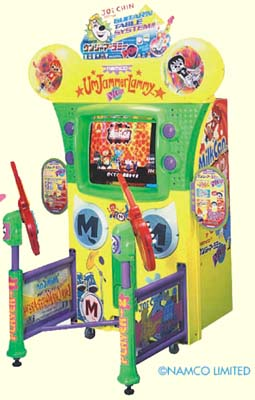
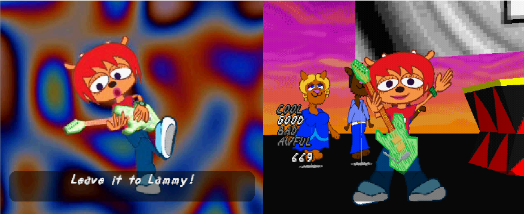

Did you know that...
-
Before the announcement of PaRappa The Rapper 2,
Um Jammer Lammy was called by many as a "Parappa 2"
of sorts, especialy when it came out. This was,
coincidentally, also the development title for the
game, as shown in concept
art
on the Official Guidebook.
-
In August 26th of 1999, there was a launch party
for the North American release of Um Jammer Lammy at
the Roxy Nightclub in New York City, in where the voice
actors for many of the characters that appeared in the
game performed songs from both PaRappa The Rapper and Um
Jammer Lammy.
You can watch the Um Jammer Lammy at the Roxy concert here.
-
Rodney Greenblat himself found the difficulty of
Um Jammer Lammy to be very hard.
-
Due to the bigger budget compared to the previous game,
there were commercials made to promote Lammy in Japan.
One of the more notable ones was
a short advertisement where Parappa is watching TV and falls in love with
Lammy after seeing her face on TV, which is really weird due to the
fact that Parappa's main and only love interest in the games
is Sunny Funny.

-
For a long time, the arcade version of Um Jammer Lammy, which is
called Um Jammer Lammy NOW! was considered lost media. However, a
real cabinet is confirmed to exist, and footage of many of the
arcade-exclusive cutscenes such as the MilkCan interviews, Joe Chin
commercials and music videos have shown up on the internet.
-
Stage 1 of PaRappa's story mode has
a small clip based on the cutscenes for that stage focusing on PJ
Berri with a instrumental version of "All You Need is Music".
-
Quite a few expressions shown in the FMV cutscenes,
most notably with Rammy
are not present in the in-game models for the respective
characters.
In addition, Lammy has three-dimensional feet on the FMVs, but
is rendered completely flat ingame.

-
In Stage 6, if you notice the enviroment surrouding Lammy,
you can see PJ walking while eating a banana at the moment
Lammy's ghost leaves her body. Some people have theorized
that this means that PJ was the one who accidentally killed
Lammy due to his gluttonous eating habits.
-
In stage 7, you can see Sweety Bancha
sitting in the background
during one of the flashback cutscenes. This cameo is the
only appearance Sweety has ever had in any of the games.
-
There are more than a few references to the original PaRappa
the Rapper across the game - Lammy recalls the events of the
orgiinal game's fifth stage at the very start of the game and
at the start of the cutscene prior to Power Off, Power On!,
we see a big parking lot where the cars are organized in rows
whose sections are separated by signs showing the faces of
PaRappa 1's masters.
{kind=link}
{kind=link}
{kind=link}
/Screenshots/Cutscenes/Um%20Jammer%20Lammy%20(Japan)-220318-200253.png){kind=link}
/Screenshots/Cutscenes/Um%20Jammer%20Lammy%20(Japan)-220318-201720.png){kind=link}